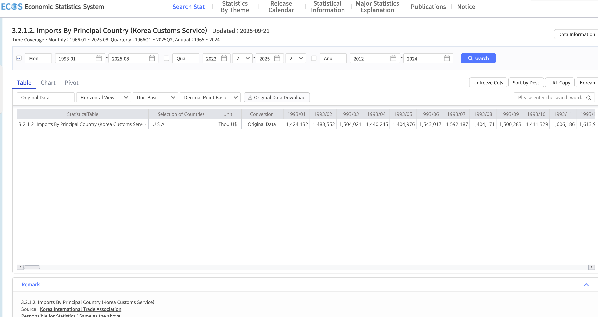

Code
import yfinance as yf
import pandas as pd
ticker = "^KS11"
data = yf.download(ticker, start="1990-01-02", end=None, interval="1d", progress=False)
#data.to_csv("kospi.csv")
These datasets contain yield curve information for both the United States and Korea. Yield curves represent benchmark borrowing costs across short- and long-term maturities. The difference between long- and short-term yields (“the slope”) reflects market expectations about growth and inflation. The U.S. yield curve will be used primarily to capture U.S. economic conditions, while the Korean yield curve will measure how U.S. rate movements influence Korean bonds. The analysis focuses on the spread between 3-year (short-term) and 10-year (long-term) maturities.
This dataset records the daily exchange rate of the Korean Won (KRW) against the U.S. Dollar (USD). The FX rate is central to understanding the U.S. dollar’s influence on Korea’s financial markets. It allows the detection of turning points, trend shifts, and day-to-day volatility, helping to evaluate how U.S. rate shocks and dollar movements transmit into the Korean currency market.
Yahoo Finance provides accessible and reliable financial market data. In this project, it is used to obtain stock market indices such as the KOSPI—the main benchmark for Korean equities,U.S. Dollar Index (DXY) and S&P500 index. These data support analyses linking stock performance and currency strength to U.S. interest rate movements. For this project yfinance via python will be used to access dataset and store to my folder.
import yfinance as yf
import pandas as pd
ticker = "^KS11"
data = yf.download(ticker, start="1990-01-02", end=None, interval="1d", progress=False)
#data.to_csv("kospi.csv")import yfinance as yf
import pandas as pd
ticker = "DX-Y.NYB"
data = yf.download(ticker, start="1981-04-13", end=None, interval="1d", progress=False)
#data.to_csv("usd_index.csv")import yfinance as yf
import pandas as pd
sp500 = yf.download("^GSPC", start="1990-01-02")
#sp500.to_csv("sp500.csv")
This dataset reports Korea’s imports and exports with the United States, measured in thousands of U.S. dollars over time. Since Korea’s economy is heavily export-oriented, t rade data are crucial for assessing how U.S. economic developments—through growth momentum, dollar fluctuations, and rate differentials—affect Korea’s trade performance. This dataset supports the examination of transmission channels between U.S. shocks and Korea’s real economy.
This dataset provides the residential property price index for Korea, specifically the Seoul metropolitan area. Given that the housing market represents one of Korea’s largest sectors, changes in property prices and transactions are key indicators of domestic financial conditions. This data enables analysis of how U.S. economic conditions and interest rate changes affect Korea’s housing affordability, financing costs, and overall market activity.
This dataset provides the Effective Federal Funds Rate (EFFR) from the Federal Reserve Economic Data (FRED). The effective rate reflects the average interest rate at which depository institutions lend balances to each other overnight and serves as the key indicator of U.S. monetary policy stance. In this project, the FRED rate data represent the foundation of U.S. policy movements, used to identify tightening or easing cycles, measure interest-rate shocks, and analyze how U.S. monetary changes transmit to Korean financial markets, including bond yields, FX, and equity valuations.
This dataset contains the Bank of Korea (BoK) Base Rate, which is the main policy rate set by the BoK’s Monetary Policy Board. The base rate determines short-term money market conditions and anchors borrowing and lending rates across Korea’s financial system. In this project, the BoK rate is used to evaluate domestic monetary policy reactions to external U.S. rate movements. Comparing shifts in the BoK base rate with changes in the FRED effective rate allows identification of synchronization or divergence between the two central banks’ policies and their effects on Korea’s yield curve, currency, and real economy.